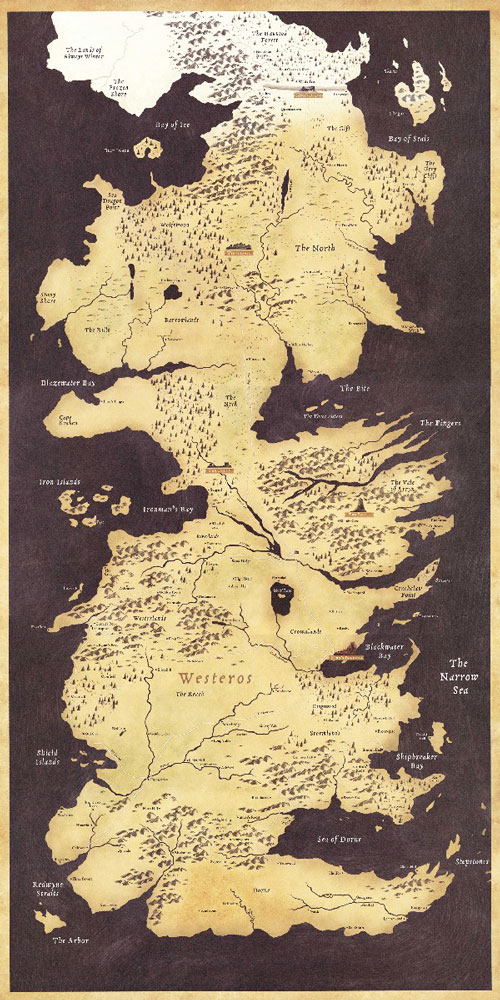

Westeros
Bief
Le Bief, domaine de la maison Tyrell, est la régio...
Conflans
Le Conflans, domaine de la maison Tully de Vivesai...
Dorne
La péninsule de Dorne, domaine de la maison Martel...
Iles de Fer
Les Îles de Fer, domaine de la maison Greyjoy, son...
Nord
Le Nord de Westeros constitue la moitié septentrio...
Terres de l'Orage
Les Terres de l'Orage, domaine de la maison Barath...
Terres de l'Ouest
Les Terres de l'Ouest, domaine de la maison Lannis...
Terres de la Couronne
Les Terres de la Couronne, fief ancestral de la ma...
Val d'Arryn
Le Val d'Arryn est une région montagneuse bordée p...